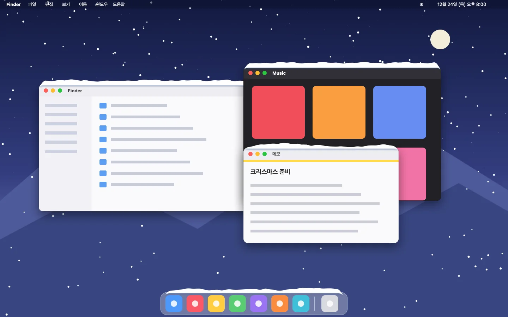
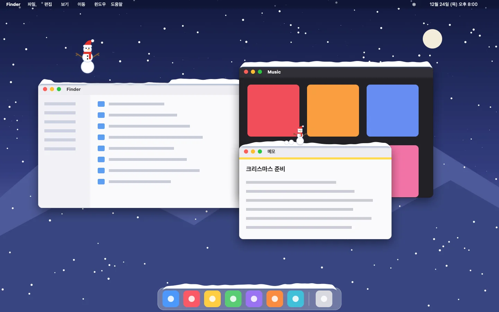
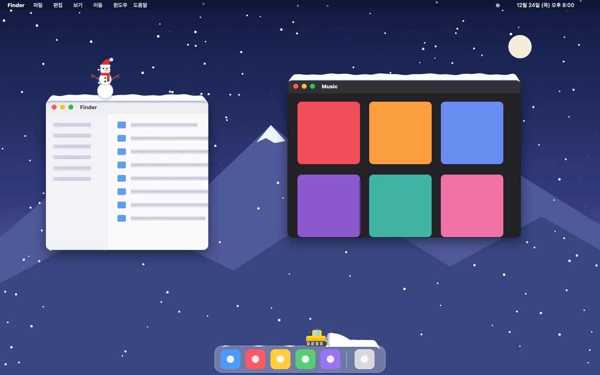
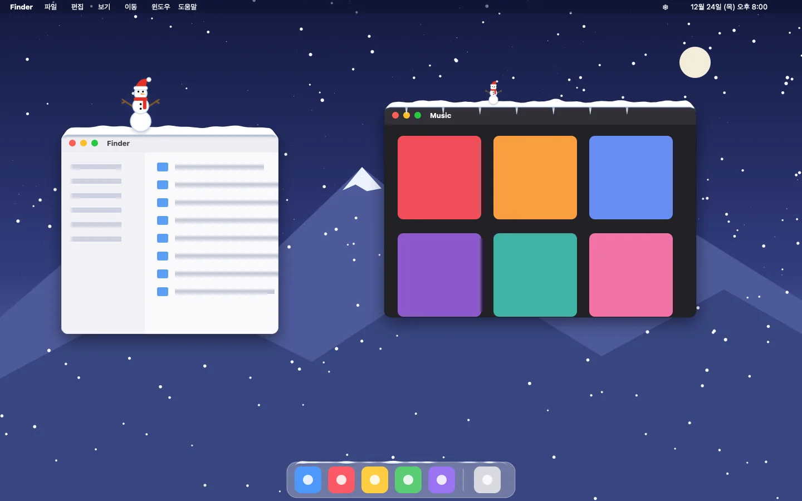

1 · 소복소복창 윗면에
창 윗면에
눈이 쌓여요
눈송이는 창 뒤로 지나가서 일을 방해하지 않아요. Dock 위에도 차곡차곡.
2 · 눈사람굴리면 눈덩이,
굴리면 눈덩이,
놓으면 눈사람
산타 모자, 비니, 양동이, 중절모. 목도리 색까지 매번 달라요.
3 · 제설차부릉부릉
부릉부릉
노란 제설차
가끔 Dock 위를 지나가며 눈을 밀어요. 메뉴에서 불러올 수도 있어요.
4 · 고드름녹으면
녹으면
고드름이 똑똑
클릭하면 와장창. 모닥불 커서로 녹여도 돼요 🔥
데스크톱



